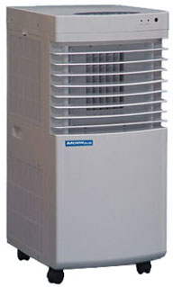
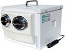
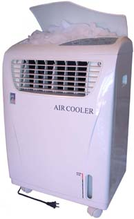
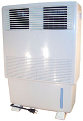
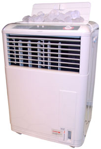

Counter Top 12 volt or 110 Volt with Converter MightyKool




*Evaportative Coolers Bottom Row
If your climate is typically dry Evaporative Coolers cool you in your Office, Bedroom, Attic, Garage or open-air patio, anywhere you need the relief. No reason to suffer from heat any longer, just plug into the wall, add a little water and cool away. These versatile coolers units use less energy than a 100-watt light bulb. If your air is typically humid we do not recommend Evaporative Cooling.
Our Evaporative Cooler Models are designed for cooling in the summer and humidifying in the winter making your cooling and heating more energy efficient, therefore saving money year around. Our Lightweight Portables may be moved around smoothly from place to place on the four caster rollers or picked up by the two built-in handles. They hold enough water to run for up to ten hours on one fill and will not be damaged if they run out of water.
The vents are fully adjustable on the WF705 or WF604 and you
may select, with a touch of a button, to have them oscillate from
side to side if you wish. There is lots of air volume produced
by the whisper quiet three-speed motor. You may even add ice for
additional cooling on all evaporative cooler models, however it
is typically not necessary. All Models are constructed from durable
ABS plastic and both Models cool the same. These attractive, feature
filled, evaporative coolers have a one year limited warrantee.
ENERGY
CRISIS: If they cut off your power during a heat wave:
Operate your 110-Volt Cooler through an inverter attached to a
battery or use the MightyKool 12-Volt Model with the battery alone.
When the power comes back on merely charge the battery with a
battery charger. (Anybody using a Solar System already understands
this concept).
To operate the 110-Volt Models you need a 200 watt Inverter, a
Battery and a Battery Charger for a total investment of about
$200.00. You should be able to find a 200 to 300 Watt Inverter
for $40 to $100 from Radio Shack, Camping World, maybe even Target,
WalMart, KMart, etc. Then you need a 125 Amp Hour Deep Cycle Battery
and Battery Charger capable of properly charging the battery.
You will be able to operate any of our 110-volt Evaporative Coolers
for around 14 hours before the battery would be ready for charging.
Or you could use the MightyKool 12-volt cooler with no extra parts except the battery and it will give you 50 to 80 hours of cooling on only one Deep Cycle Battery! Now that is real power and savings! A Back Up System like any of these could make a big difference in your comfort and well being in the event of a power outage during a heat wave.
|
|
Inches - Centimeters |
Weight |
Capacity |
110 volts |
|
|
|
|
|
Light Gray |
C = 44.4 x 33 x 64.8 |
6.9 kg |
gallons 7.7 liters |
|
|
|
|
|
|
Light Gray |
C = 44.4 x 33 x 64.8 |
7.3 kg |
9 liters |
|
|
|
|
|
|
Light Gray |
C = 41.5 x 23.3 x 59.6 |
6. kg |
7.7 liters |
|
|
|
|
|